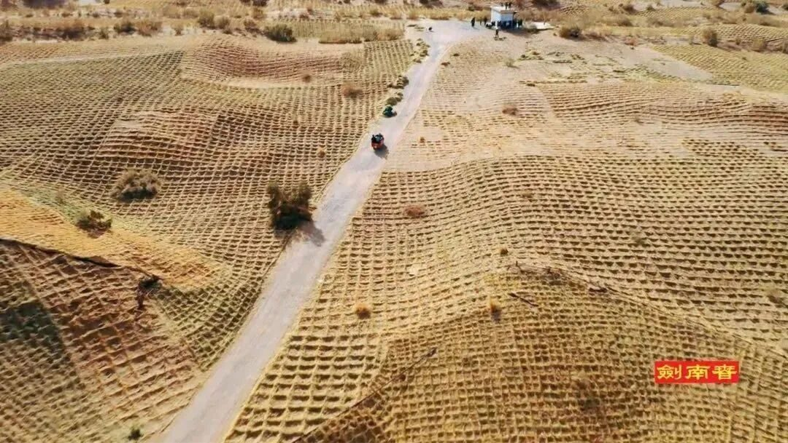
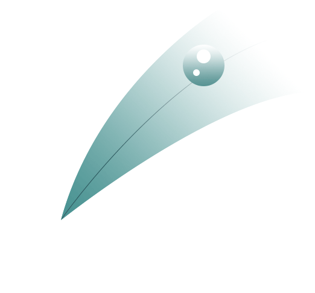
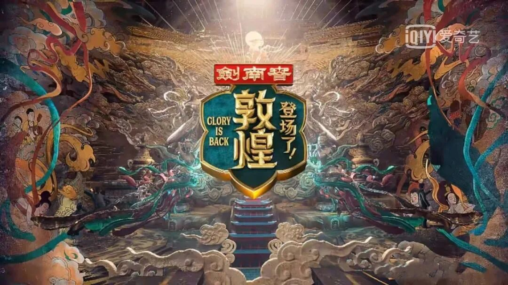
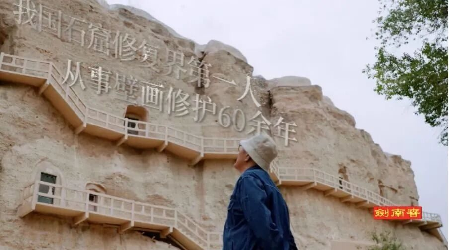
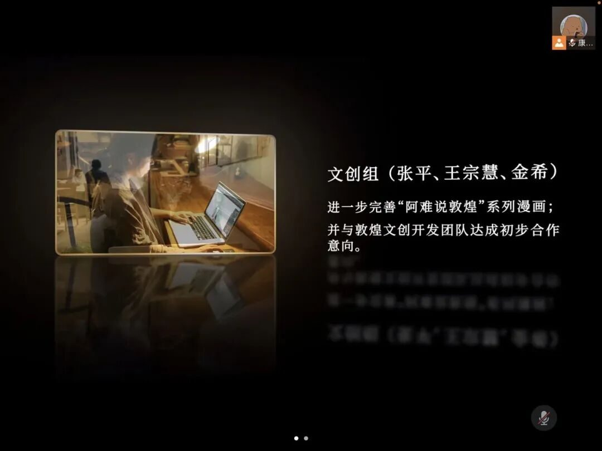

【煌然成篇·十五】静听驼铃响，心触赤子怀





来源 | 行者无疆实践团
文字 | 袁欣怡
排版 | 薛政
审核 | 康艳虎 张清雅
行者无疆实践团
QQ：2758025831

随行者一起认识世界
长按二维码





来源 | 行者无疆实践团
文字 | 袁欣怡
排版 | 薛政
审核 | 康艳虎 张清雅
行者无疆实践团
QQ：2758025831
随行者一起认识世界
长按二维码
SAME EXPEDITION / 同期推文

情不知所起，大梦敦煌我曾独上远山看雾尽时月影微寒看落日余晖洒下的一缕缕碎波潺潺看湖光掠影一行白鹭路辗转看喧嚣殆尽后华灯初上夜色阑珊却从未领略过这般的风景悠悠驼铃，萧萧枯木，茫茫

敦煌——千年守望一座城市，一种性格。艺术，是敦煌这座千古名城的永恒属性，它将带领着敦煌走向辉煌的未来。千年岁月，敦煌外的天空依旧尘沙飞舞，只不过敦煌的陪伴者却不断变化。我想，这

一座玉门关，半部河西史通过吴老师的讲解，我再次体会到了吴老师就像那些未曾载入任何史册资料的创造者们一般，将一生的心血倾注在炫彩的壁画上，不求功名，不问世俗。而谁又能把这些才华横